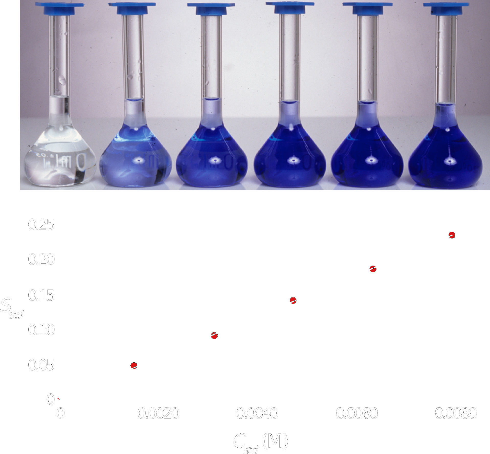
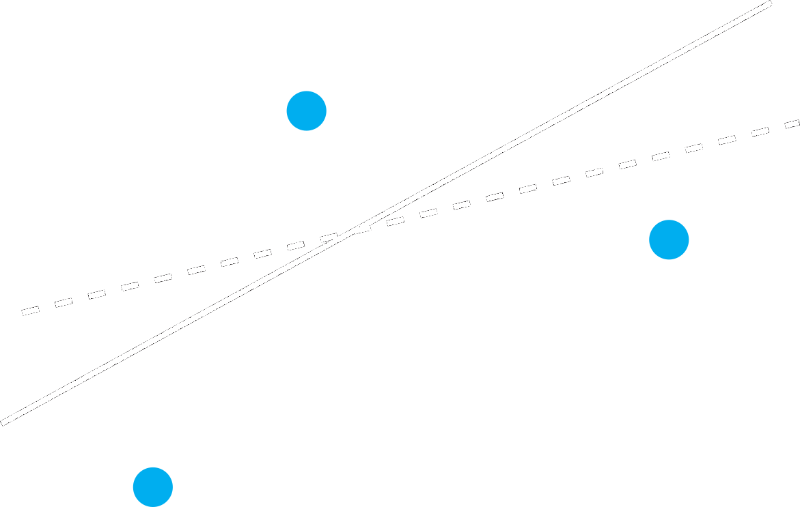
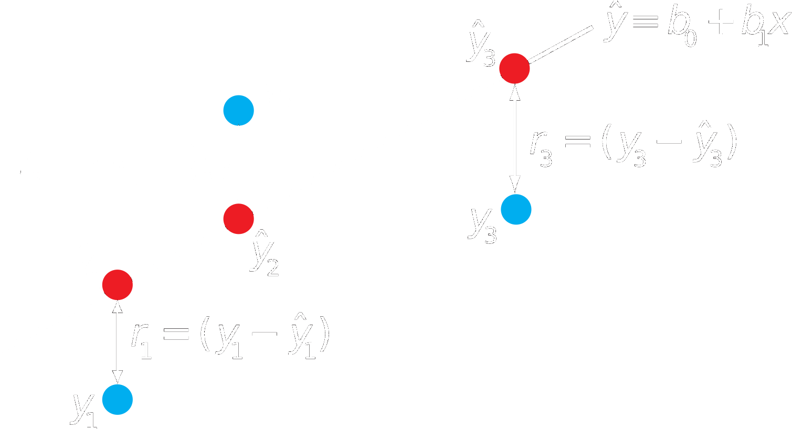

layout: true --- <div style="margin-top: 100px;"></div> <h1 style = "text-align: left; font-weight: bold; margin-left: 175px;">Confidence Intervals for Standard Curves</h1> <h5 style = "text-align: left; font-weight: bold; margin-left: 175px;">Harvey Ch 5, Granger Ch 22</h5> --- class: center  .image-credit[David Harvey / [Analytical Chemistry 2.1](https://chem.libretexts.org/Bookshelves/Analytical_Chemistry/Book%3A_Analytical_Chemistry_2.1_%28Harvey%29) / [CC BY-SA 4.0](https://creativecommons.org/licenses/by-sa/3.0/at/deed.en)] -- $$ C\_A = \frac{(s\_A - b\_0)}{b_1} $$ --- class: center <div style="margin-top: 200px;"></div> $$\mu = \bar{x} \pm t \frac{s}{\sqrt{N}}$$ --- class: center  .image-credit[David Harvey / [Analytical Chemistry 2.1](https://chem.libretexts.org/Bookshelves/Analytical_Chemistry/Book%3A_Analytical_Chemistry_2.1_%28Harvey%29) / [CC BY-SA 4.0](https://creativecommons.org/licenses/by-sa/3.0/at/deed.en)] --- class: center  .image-credit[David Harvey / [Analytical Chemistry 2.1](https://chem.libretexts.org/Bookshelves/Analytical_Chemistry/Book%3A_Analytical_Chemistry_2.1_%28Harvey%29) / [CC BY-SA 4.0](https://creativecommons.org/licenses/by-sa/3.0/at/deed.en)] --- class: center <div style="margin-top: 200px;"></div> $$SS\_{y-\hat{y}} = \sum\_{i = 1}^{n} (y\_i - \hat{y}\_i)^2$$ --- class: center <div style="margin-top: 200px;"></div> $$s\_r = \sqrt{\frac {\sum\_{i = 1}^{n} \left( y\_i - \hat{y}\_i \right)^2} {N - 2}}$$ --- class: center <div style="margin-top: 200px;"></div> $$s\_{C\_A} = \frac {s\_r} {b\_1} \sqrt{\frac {1} {m} + \frac {1} {n} + \frac {\left( \overline{S}\_{samp} - \overline{S}\_{std} \right)^2} {(b\_1)^2 \sum\_{i = 1}^{n} \left( C\_{std\_i} - \overline{C}\_{std} \right)^2}}$$ --- class: center <div style="margin-top: 200px;"></div> $$\mu\_{C\_A} = C\_A \pm t s\_{C\_A}$$ <!-- =============================================================================== -->